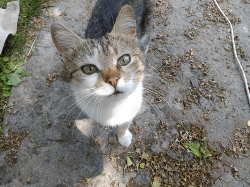
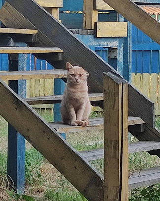

Веб-сторінка Левашової Світлани ФБ-13

Причини любити котиків:
1. З котиками ніколи не нудно;
2. Вони пухнасті та м'які;
3. Зігріють, коли холодно;
4. Слугують антистресом;
5. Муркотять;
6. Чудові слухачі, співрозмовники та порадники.

Гарного дня!